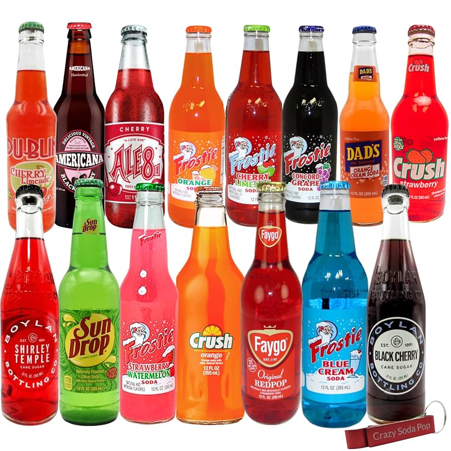

Descubre una Experiencia Gastronómica Única
Disfruta de una experiencia culinaria única con nuestros platos gourmet, preparados por chefs expertos en un ambiente elegante y acogedor.

Disfruta de una experiencia culinaria única con nuestros platos gourmet, preparados por chefs expertos en un ambiente elegante y acogedor.
Descubre nuestros platos estrella
Refrescante bebida gaseosa con sabor clásico y burbujeante.
Soda vibrante con sabor a naranja, ideal para acompañar cualquier comida.
